IAI · UET · VNU
Presenter: Trinh Ngoc Huynh
Email: huynhtn@vnu.edu.vn
Definition, what we can generate, and the rise of GenAI
Modelling \( p(y\mid x) \) versus \( p(x) \), \( p(x,y) \) and \( p(x\mid c) \)
Fitting \( p_\theta(x) \) to \( p_{\text{data}}(x) \), likelihood and sampling
An unknown distribution, complex data, and competing trade-offs
Evolution, model landscape, and applications
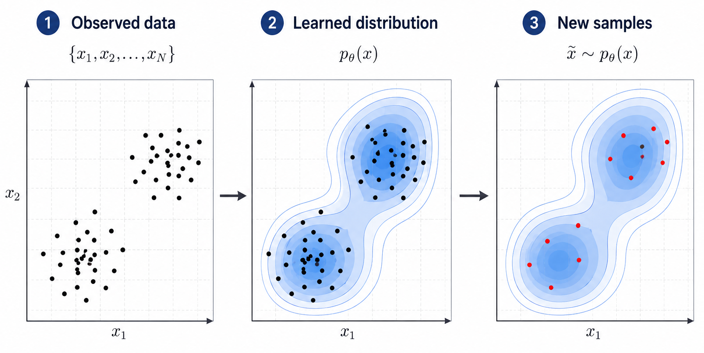
ChatGPT, Claude, Gemini, Grok
Autoregressive Transformers
DALL·E, Midjourney, Stable Diffusion
Latent diffusion
Voice synthesis, music generation
Diffusion, autoregressive
Sora, Veo, Runway
Diffusion Transformers
3D models, scenes, avatars
Score distillation, NeRF
GitHub Copilot, Cursor
Autoregressive Transformers
The core ideas are old, the breakthrough came from scaling them:
Transformers and diffusion models scale smoothly
Scaling laws: more parameters → better samples
Web-scale text corpora and image–text pairs (LAION-5B)
Self-supervised: no manual labels needed
Large accelerator clusters with distributed training
Hardware + distributed training make it feasible
The rest of the course asks how these models are built:
How is the distribution described?
How do we fit it to data?
How do we draw new data from it?
The most familiar task: look at an observation and predict its label.
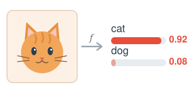
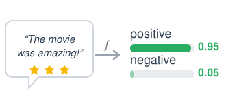
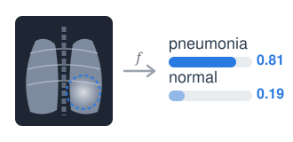
What do plausible observations look like?
How are observations and labels distributed together?
What does the data look like given a condition?
\( p(x, y) = p(y \mid x)\, p(x) \): the joint contains both \( p(y \mid x) \) and \( p(x) \)
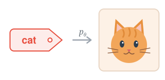
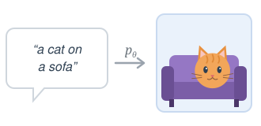
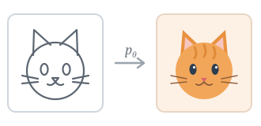
The same dataset of cats and dogs, two different questions:
To generate realistic samples, a model must capture the structure of the data, not just a boundary.
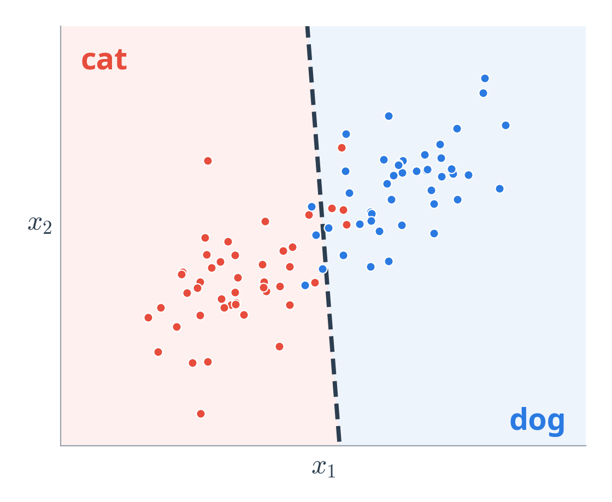
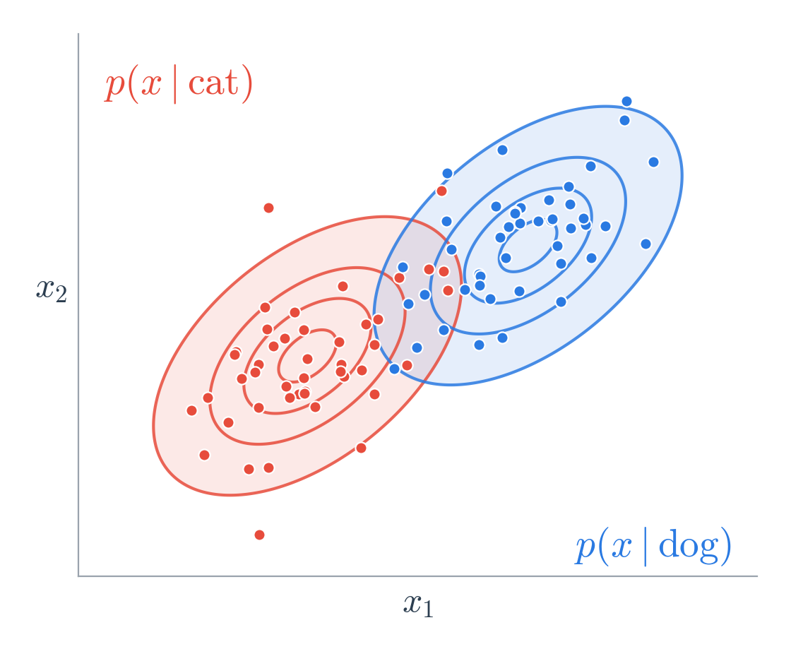
A boundary is enough to classify; only a distribution lets us generate.
How likely is this observation?
e.g. anomaly detection
Generate a new observation
e.g. new images, text, audio
Generate data given a condition
e.g. text-to-image, editing
A generative model learns \( p(x) \), so it can evaluate, create and control data.
We have a dataset, but not the distribution that produced it:
A finite set of samples
A model of the distribution itself
We observe samples from the data distribution, not the distribution itself.
Given a model family \( p_\theta(x) \) with parameters \( \theta\) and a dataset \( \mathcal{D} \), which \( \theta \) should we choose?
Probability of the whole dataset
Same optimum, easier to compute
Maximum likelihood estimation (MLE): choose the \( \theta \) under which the observed data is most probable.
Does the model assign high probability to the data we observe?
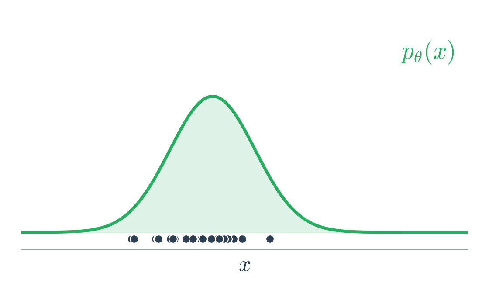
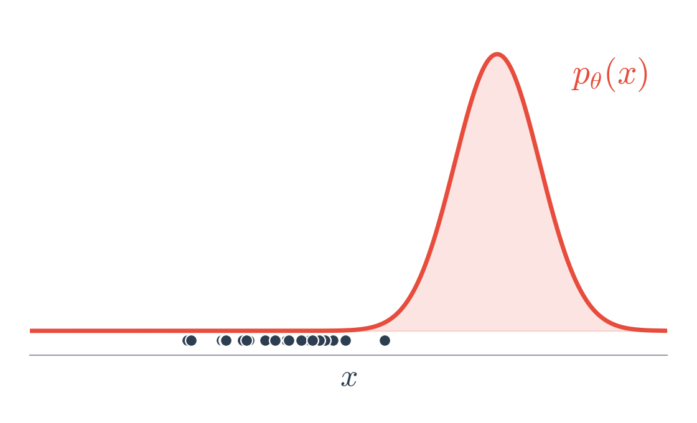
The model that puts its mass where the data lies has higher likelihood.
How do we fit \( p_\theta(x) \) to the data?
How do we draw a new sample from it?
Learning and sampling are different problems: each model family solves them in its own way.
Learning a distribution is not the same as sampling from it.
Different generative models use different strategies for sampling.
Even with enough samples, the data itself is hard to model:
images, audio, video, text
complex distributions, many separate modes
strong, across dimensions and scales
What we want from a model does not always point in the same direction:
A model that assigns high probability to the observed data does not necessarily produce the samples humans prefer.
Even a good model must be usable in practice:
some models need many steps per sample
large models, memory and long training runs
no single metric captures sample quality
Different model families make different choices to address these challenges.
Generative modelling grew through four stages:
Each stage introduced a new modelling idea, not just a new architecture.
| Family | Core idea | Lectures |
|---|---|---|
| Autoregressive | Factorize \( p(x) \) into conditionals | 04–05 |
| VAE / latent models | Learn latent representations | 03, 06–07 |
| Normalizing flows | Invertible transformations | 08 |
| GANs | Adversarial learning | 09–10 |
| Energy-based models | Learn an energy function | 11 |
| Diffusion | Learn to reverse a noising process | 12–14 |
| Flow matching | Learn continuous transport | 15 |
This landscape is the roadmap for the rest of the course.
Different model families make different choices about:
How to represent the distribution
How to learn it from data
How to sample from it
The rest of this course explores these choices.
Next lecture: Probabilistic Foundations